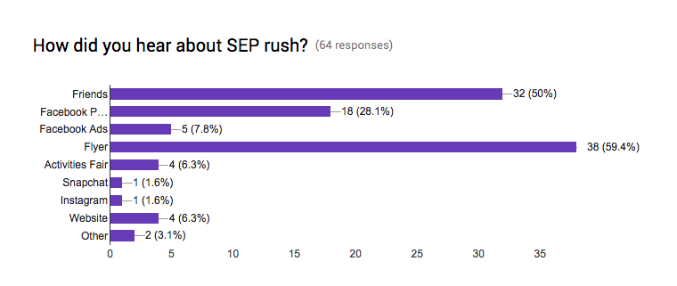
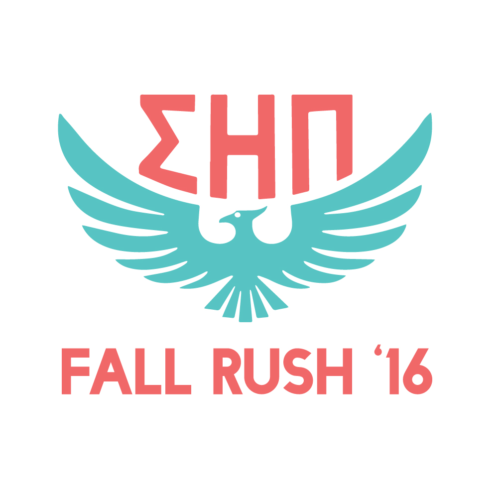
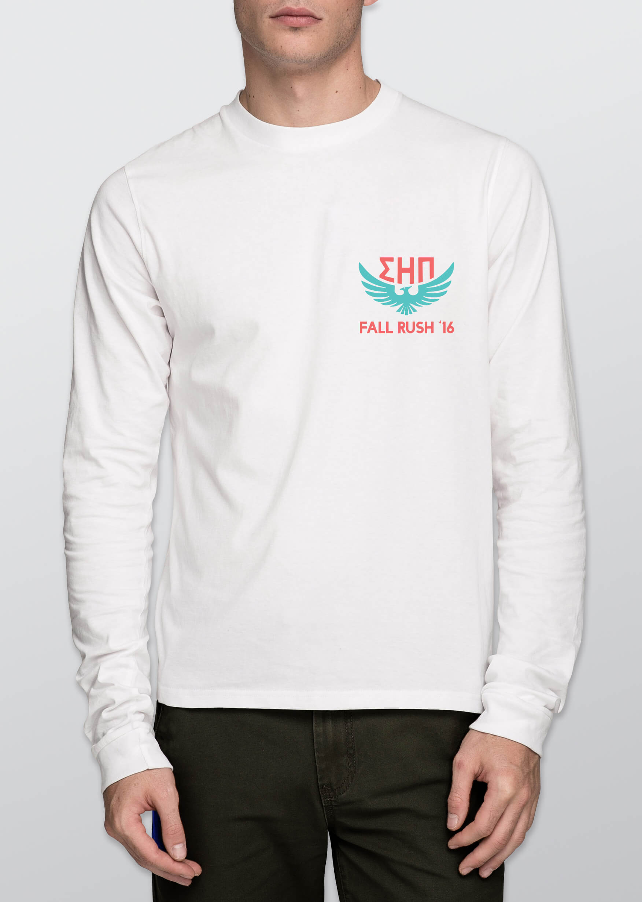
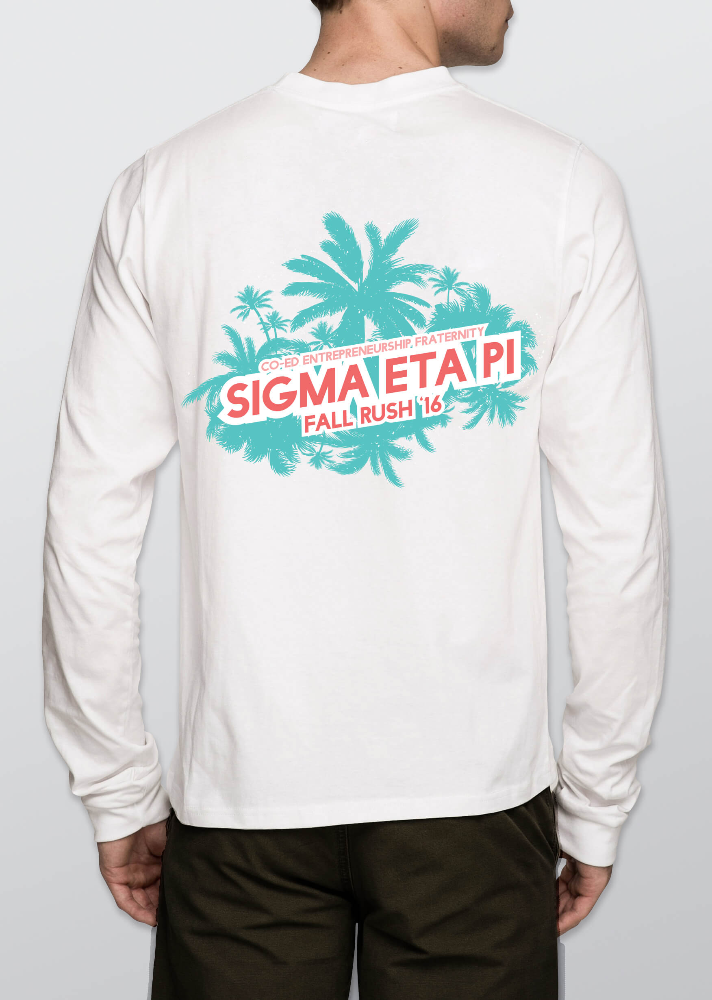
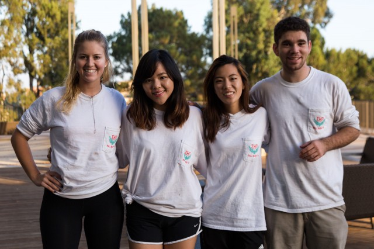
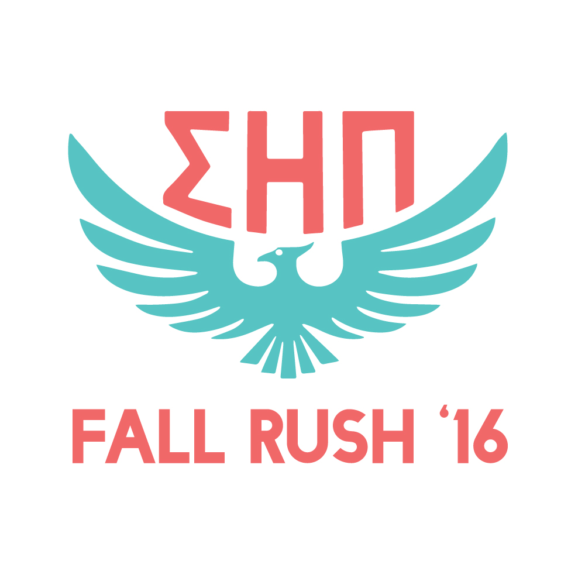
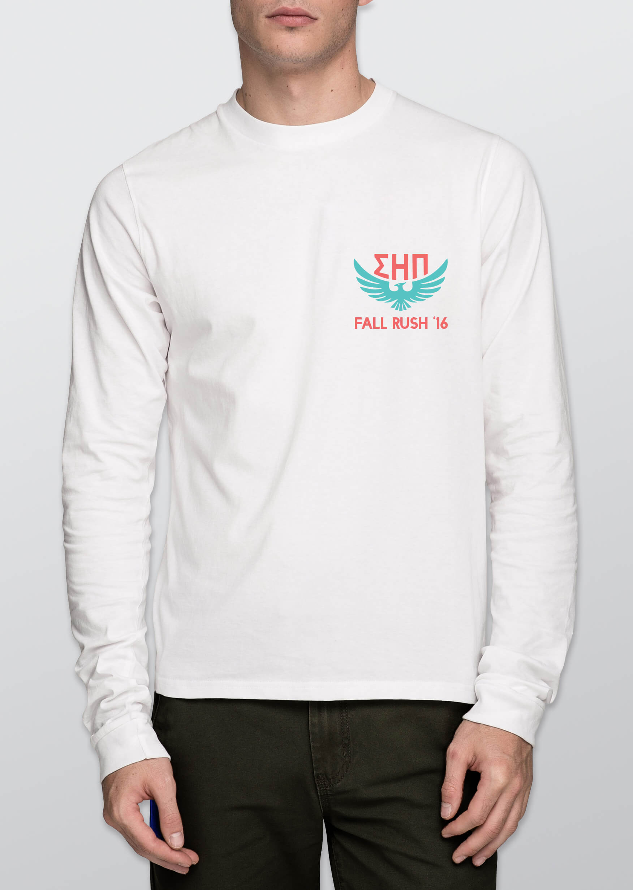
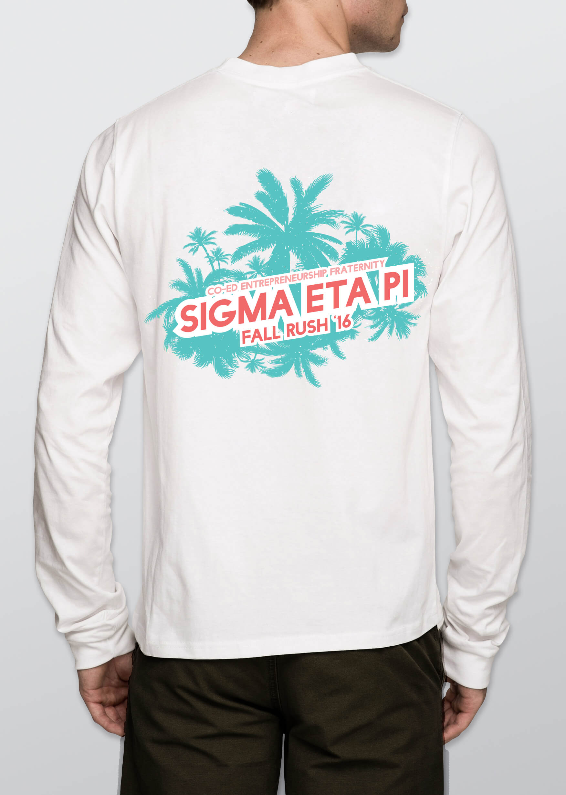
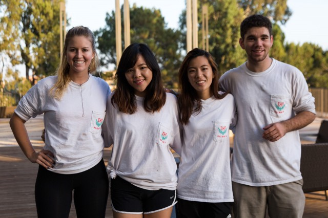
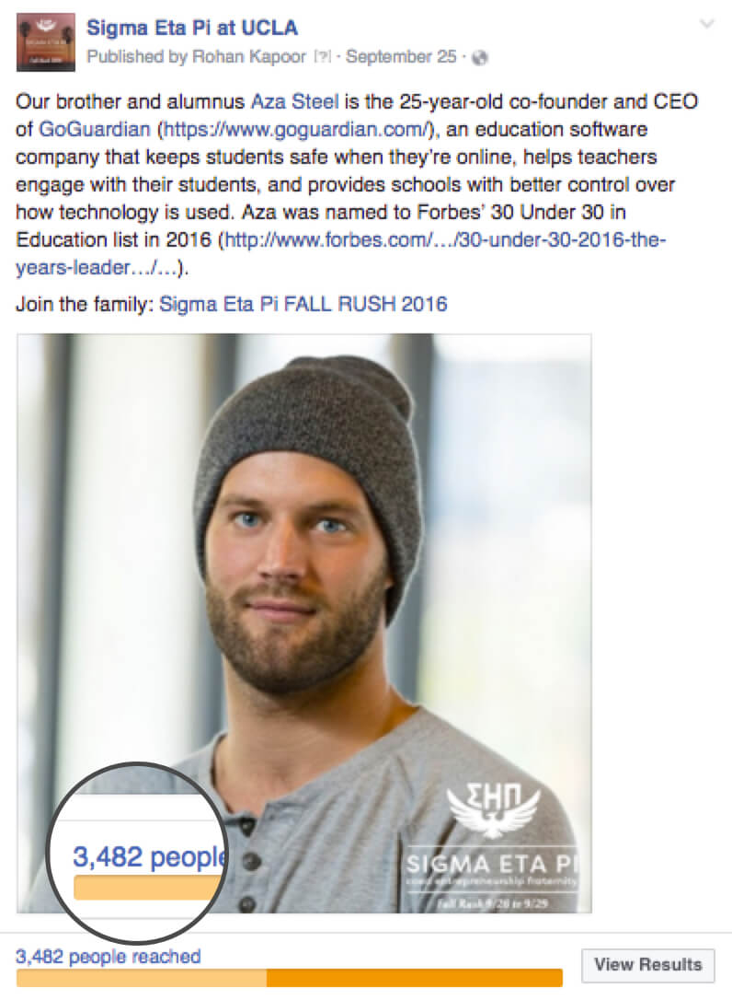

Sigma Eta Pi
GRAPHIC DESIGN & SOCIAL MEDIA
Sigma Eta Pi was founded at UCLA in 2010. It is the west coast’s first entrepreneurship fraternity and has grown to see chapters at numerous universities such as Stanford, UC Berkeley, USC, and more. Because the organization is still so new, we are always exploring creative and innovative ways to grow.
Every fall and spring quarter at UCLA, Sigma Eta Pi hosts rush events to recruit its newest members. In fall 2016, I designed promotional materials and worked on social media strategy to host the largest rush event the fraternity has ever seen.
Maximize the number of attendees at rush.
Because the fraternity is so new and constantly changing, there is no defined standard for new members. There is no minimum GPA requirement, you don’t have to own a startup, and your major does not matter. We simply wanted to meet as many people as possible.
For previous recruitment events, we took advantage of a few different marketing tactics ranging from Facebook ads to snapchat filters to T-shirts. During each rush event, we had attendees fill out surveys to tell us how they heard about us, and with every set of surveys there was always one medium that beat the rest: flyers.
I also spent a lot of time at previous recruitment events talking with attendees about what they were looking for in the fraternity. Interestingly, most of the people we eventually accepted tended to be looking for a group that placed a strong, yet equal emphasis on professional goals as well as a social environment.
Based on the above results, it made the most sense for me to focus on flyers, maximizing referrals from friends, and Facebook strategy.
When thinking about how I wanted to design our promotional materials, I decided that the design of our brand elements would not be uniform across mediums. Essentially, I didn’t want to put the fraternity in a category because it was so new compared to all the other fraternities on campus. When people saw our content, I wanted the experience to feel unexpected, unique, and, most importantly, memorable.
I decided to start with the flyer. From there, I thought about the experience of someone being handed the flyer by a member. What was the first impression of the member, and how can that be affected by the flyer and other materials? I then, finally moved on to Facebook strategy.
Because we were competing with hundreds of student organizations handing out flyers on campus every day, I wanted to come up with a flyer that would stand out. I wanted the flyers to meet the following criteria:
I thought about how our organization should be perceived when being handed the above flyer by a member wearing our T-shirt. I wanted that experience to leave an impression on the person being handed the flyer that would ultimately pique his/her interest and decide to seek out more information.
Essentially, I decided to emphasize the social aspect of the fraternity with a Los Angeles-based vibe. The combination of this T-shirt and our flyer could set a bold yet relaxed tone emphasizing the fraternity’s “work hard, play hard” mentality. Thus the T-shirts would meet the following criteria:
 







In an effort to differentiate ourselves from all other professional fraternities on Facebook, I decided to focus on the content of our posts, rather than designing graphics for social media. I wanted these posts to feel genuine. My approach was to strategically make social media posts about current members/recent alumni and what they’ve accomplished in terms of entrepreneurship.
I started with posts about younger members first, and as the event grew closer, I shifted towards alumni who had the most impressive accomplishments. I sent out the above post the night before our first rush event and the results were better than expected. Within two days, the post had reached nearly 3,500 people. In the end, the final collection of posts reached a total of over 12,000 people, nearly half of which were organic.
The final result was a recruitment event hosting nearly 100 attendees, a 28% increase from the previous quarter, and the largest rush event the fraternity had ever seen.